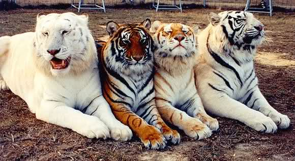

La Tierra tiene una piel y esa piel tiene enfermedades; una de las enfermedades es conocida como “hombre”.
Friedrich Nietzsche. Filósofo, poeta, músico y filólogo alemán, considerado uno de los pensadores contemporáneos más influyentes del siglo XIX.

Que es?? |
Importancia de la diversidad genetica |
|---|---|
|
Heliconius mimicry.png La diversidad genética es el número total de características genéticas dentro de una especie. Es el componente básico de la biodiversidad. Representa la capacidad para encontrar individuos que suplan a otros afectados por dolencias congénitas, malformaciones, debilidad ante patógenos y otros problemas hereditarios. Cuanto mayor diversidad genética, mayores probabilidades tienen las especies de sobrevivir los cambios del medio ambiente Técnicamente P. J. Smith (1996, p. 1) la define como: La información contenida en los genes de los distintos individuos de una especie. Según el mismo autor, la diversidad genética se ha estudiado mucho en la tierra firme, especialmente la referente a los bosques tropicales. Menos en el mar, centrándose principalmente en los mamíferos y las aves, escaseando la documentación sobre la diversidad genética de los peces. Sin embargo, la pérdida de diversidad y la consiguiente endogamia puede constituir una causa de extinción en todos los grupos taxonómicos. El estudio de la genética de poblaciones incluye varias hipótesis y teorías acerca de la diversidad genética. La teoría neutralista de la evolución propone que la diversidad es el resultado de la acumulación de mutaciones neutrales. La selección disruptiva es la hipótesis de que dos subpoblaciones de una especie viven en ambientes diferentes que seleccionan diferentes alelos de un mismo locus. Esto puede ocurrir, por ejemplo, si la especie tiene una distribución geográfica extensa comparada a la movilidad de los individuos dentro de ella. La selección según la frecuencia es la hipótesis de que a medida que los alelos se vuelven más comunes, llegan a ser más vulnerables. Esto ocurre en las interacciones patógeno-huésped donde una alta frecuencia del gen defensor en el huésped significa que, si el patógeno se adapta a esa defensa, todos los que tienen ese alelo se vuelven vulnerables.  |
Un estudio realizado por la Fundación Nacional para la Ciencia (National Science Foundation, NSF) en 2007 muestra que la
diversidad genética y la diversidad biológica o biodiversidad (en términos de diversidad de especies) son
interdependientes. La diversidad dentro de cada especie es necesaria para mantener diversidad entre las especies
y viceversa. Según el autor principal de este estudio, Dr. Richard Lankau, "si se extrae del sistema uno
u otro tipo de diversidad, el ciclo puede romperse y la comunidad puede quedar dominada por una sola especie."1
Se ha encontrado diversidad genotípica y fenotípica en todas las especies y en todos los niveles: proteína,
ADN y organismo. En la naturaleza esta diversidad no ocurre al azar sino que está fuertemente estructurada
y se correlaciona con las variaciones ambientales y con el estrés ambiental. La interdependencia entre la
genética y la diversidad de las especies es delicada. Los cambios en la diversidad de especies acarrean cambios
en el ambiente, que a su vez inducen adaptaciones de las especies restantes. Las pérdidas de diversidad genética
llevan a la pérdida de diversidad biológica. Se ha estudiado la reducción de la diversidad genética en las
poblaciones de animales domésticos y se la atribuye a las demandas del creciente mercado y a la globalización
de la economía. La diversidad genética es importante por dos razones. Primero, la adaptación biológica contribuye
a un aumento de la diversidad genética y segundo la eficacia biológica está íntimamente relacionada a la
heterocigosis (diversidad de genes alelos), una medida común de diversidad genética. Una forma de comprender
la importancia de la diversidad genética es ver lo que pasa cuando esta sufre una severa reducción. Los repetidos
apareamientos entre parientes cercanos o la autofecundación (o sea la endogamia) traen como consecuencia
una pérdida de heterocigosis. La endogamia a su vez lleva a la depresión endogámica con pérdida de eficacia
biológica. Los genes deletéreos predominan y esto puede llevar a la extinción.8 Esto puede ocurrir cuando
se trata de poblaciones muy pequeñas.
|

Deriva genetica |
|---|
|
La deriva genética es un cambio genético aleatorio, en donde habrá cambios en las frecuencias alélicas en el
momento de la fecundación de los gametos si llegan a fertilizarse. Es decir, es probable que no se produzca
los mismos resultados en diferentes poblaciones. Ocurre cuando por casualidad sólo ciertos miembros de una
población se reproducen y transmiten sus alelos a la generación siguiente. Las frecuencias alélicas en el
acervo genético de la siguiente generación pueden ser muy diferentes de las de las generaciones anteriores.
Por otra parte, cuando una mutación nueva surge dentro de una población su frecuencia está representada por
una única copia dentro de los genes de la población. La probabilidad de que esa mutación sobreviva y pueda
transmitir de una generación a la siguiente, está determinada tanto por el azar (casualidad probable), como
por los fenómenos de selección natural. En este caso dependerá sólo de probabilidades, la frecuencia del
alelo mutante variará de generación en generación. Es aún más notoria en poblaciones pequeñas, debido a que
el grupo no es representativo desde el punto de vista genético dentro del grupo poblacional mayor, y puede
ser causada porque los individuos poseedores de un alelo determinado no se reproducen o lo hacen en baja
proporción, por lo que en la siguiente generación de este alelo desaparece o disminuye su frecuencia. La
deriva genética entonces, tiende a aumentar la variabilidad genética entre las poblaciones.
Efecto cuello de botella
|